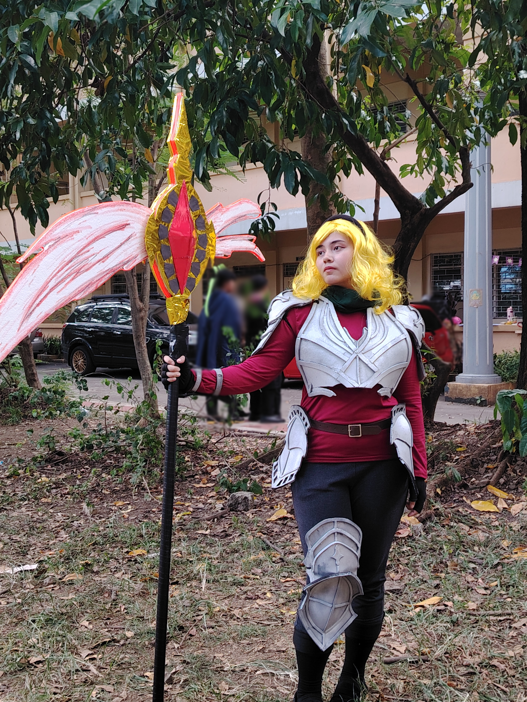

Rania Camille P. Apoderado
Digital Artist and Aspiring Web Designer
"Life is incomplete without a dose of coffee and a good AO3 fic to read."
About Me
I am a 2nd year student taking up Bachelor of Arts in Multimedia Studies at the University of the Philippines Open University. I am passionate about digital arts and, more recently, web development ever since I started my journey in UPOU. Despite not having any formal professional experience and being largely self-taught, I view every project as an opportunity to learn and improve.
Outside of academics, I am an avid fanfiction reader, video game enthusiast, and Maimai rhythm game player. I really just float through life, trying anything and everything as long as I have the time, means, and, of course, my coffee and fanfic in hand.
Things I Love
- AO3, my beloved
- My cat
- My family
- Maimai
- Pokemon
- Wuthering Waves
- Music
Passion Projects
Art Gallery
An ongoing art gallery showcasing traditional and digital artworks of characters from my favorite fandoms. Having
been a digital artist for almost ten years, I wanted to create a space where I could showcase all my works,
including some of my earliest drawings. Although most of my artworks are digital, I enjoy traditional drawing
just as much.
Through this project, I plan to develop a website that will feature my artwork from my earliest
pieces to my most recent creations. I intend to build it using either HTML or Google Sites.
Date: Ongoing
Pokemon Mezastar Collection Display
I am an avid Pokemon fan, so I like to play and collect anything related to the franchise. From December 20, 2025 to January 30, 2026, I collected all 70 Version 1 Pokemon Mezastar tags. After completing the collection, I created a portrait frame made of cardboard and materials from home, with a Pokemon-themed design to showcase the tags. But due to the size of the frame and each tag, only Special, 5-Stars, and 6-Stars were displayed.
Date: 2026-02-21
Future Princess Cosplay

A cosplay of Future Princess from Guardian Tales. I created the breastplate, shoulder and knee pads, and arm guards using EVA foam and spray paint from my dad's workshop. I also created the seven-foot-tall scythe, with the assistance of my dad, using materials collected and saved from previous projects. The project was my best cosplay from my high school days.
Date: 2024-11-27